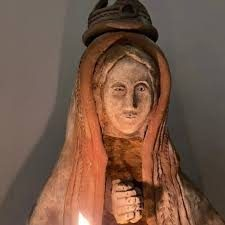

Historia y Origen
La devoción a Nuestra Señora de Itatí tiene sus raíces en los primeros años de la evangelización del Litoral argentino. Hacia 1615, frailes franciscanos que acompañaban las expediciones misioneras en la cuenca del río Paraná se establecieron en una pequeña aldea guaraní ubicada sobre un promontorio rocoso de arcilla blanca que los nativos llamaban Itatí. Allí erigieron una capilla de paja y barro, y en su altar colocaron una imagen de la Virgen María con el Niño Jesús en brazos, traída de las provincias del Alto Perú: una pequeña talla policromada de madera en el estilo barroco que los tallistas indígenas y mestizos habían comenzado a fusionar con la sensibilidad estética guaraní.
Desde los primeros años, los nativos de la región acogieron la imagen con una veneración extraordinaria. Las crónicas franciscanas del siglo XVII mencionan que los guaraníes de las reducciones vecinas realizaban jornadas de varios días de marcha para visitar a la "Señora de Itatí", a quien atribuían mercedes espirituales y curaciones de enfermedades. Esta devoción popular espontánea y persistente fue el cimiento sobre el que se edificaría, con el paso de los siglos, uno de los santuarios más importantes de la Argentina.
Durante las guerras de independencia y los conflictos que sacudieron el Litoral a lo largo del siglo XIX, la imagen fue objeto de un cuidado especial por parte de la comunidad correntina, que la consideraba protectora de la provincia. En 1900, el Sumo Pontífice León XIII otorgó la Coronación Canónica a la imagen, reconocimiento máximo que la Iglesia concede a las imágenes de especial veneración popular. Este acto consolidó la posición de la Virgen de Itatí en el corazón de la identidad religiosa del nordeste argentino.
El momento más destacado del siglo XX fue la visita del Papa Juan Pablo II al santuario el 7 de abril de 1987, durante su primera peregrinación pastoral a la Argentina. Ante una multitud estimada en más de 400.000 personas congregadas en las inmediaciones de la basílica, el Pontífice rezó ante la imagen original y encomendó a la Virgen de Itatí el pueblo argentino, el Litoral y toda América Latina.
— Tradicional en los peregrinos de Corrientes
El Nombre Guaraní "Itatí"
El nombre Itatí es una de esas palabras en las que conviven dos mundos: el de la naturaleza pura del Litoral y el de la fe que llegó con la evangelización. En guaraní, itá significa "piedra" o "roca", y tí significa "blanca", "fina" o "puntiaguda". La combinación alude a las formaciones calizas de color blanco que afloran en el barranco sobre el río Paraná donde se asentó originalmente la comunidad: "la roca blanca", "la piedra que brilla".
Con el paso del tiempo, el nombre del lugar se trasladó a su habitante más amada: la Virgen. "La Virgencita de Itatí", "La Señora de la Roca Blanca", "La Reina del Litoral" son las formas cariñosas con que la invocan millones de fieles en Argentina, Paraguay, Uruguay y Brasil. Esta fusión del topónimo guaraní con el nombre de la advocación mariana es un ejemplo único de inculturación religiosa en la América colonial: la fe católica arraigó en la tierra con las raíces del idioma nativo y creció con su savia.
La ciudad de Itatí, que hoy cuenta con unos 8.000 habitantes permanentes, se convierte en una villa de peregrinación que puede recibir más de 500.000 visitantes anuales. Su nombre, pronunciado con el acento guaraní característico del nordeste argentino —Ita-TÍ—, resuena cada 16 de julio en millones de oraciones a lo largo y ancho del continente.
La Imagen Sagrada

La imagen original de Nuestra Señora de Itatí es una pequeña escultura de madera policromada que mide aproximadamente 35 centímetros de altura. Representa a la Virgen María de pie, sosteniendo al Niño Jesús con el brazo izquierdo; con la mano derecha, señala a su Hijo como guía y camino. Su rostro, de rasgos suavemente mestizos, muestra una expresión serena y maternal que los fieles describen como "una mirada que acoge sin juzgar".
La talla responde al estilo barroco hispano-guaraní del siglo XVII: las proporciones son hieráticas, propias de una tradición catequética en la que la imagen debía ser comprensible y cercana para los neófitos guaraníes, y al mismo tiempo guardar la solemnidad propia de un objeto de culto sagrado. Los rastros de pigmentación original —azul en el manto, blanco en la túnica, dorado en las orlas— revelan una policromía sobria y elegante que contrasta con la riqueza de los mantos bordados con los que hoy suele vestirse la imagen.
La imagen está expuesta en la basílica sobre un altar de gran riqueza artística, vestida con elaborados mantos de seda, brocado y terciopelo donados por devotos a lo largo de los siglos. En su cabeza luce la corona de oro que le fue impuesta en la Coronación Canónica de 1900 y que fue restaurada y enriquecida con piedras preciosas ofrendadas por fieles de todo el país. La corona del Niño Jesús, más pequeña, es igualmente de orfebrería fina.
Devoción Popular y Peregrinaciones
La devoción a la Virgen de Itatí no es una devoción de élites ni de intelectuales religiosos: es, ante todo, la fe sencilla y ardiente del pueblo del Litoral. Los pescadores del Paraná que antes de zarpar encomiendan su embarcación a la Virgencita, las madres correntinas que llevan a sus hijos recién nacidos al santuario para presentarlos a "Mamá Itatí", los jóvenes que caminan decenas de kilómetros a pie para cumplir una promesa: en estos gestos anónimos y cotidianos vive el corazón de esta devoción.
Las peregrinaciones principales al santuario se concentran en torno al 16 de julio, fiesta litúrgica de la Virgen de Itatí, y durante el mes de julio en general. Las rutas de acceso a la ciudad de Itatí —la Ruta Nacional 12, la costanera del Paraná, los caminos rurales de la provincia de Corrientes— se llenan de grupos de caminantes que llegan a pie desde las ciudades vecinas, algunos desde Corrientes capital (a 80 kilómetros), otros desde localidades más lejanas. La imagen de los peregrinos avanzando por la ruta con velas encendidas, rosarios en mano y el cielo correntino de fondo es una de las estampas más características del catolicismo popular argentino.
El fervor no se limita a la fiesta patronal. El santuario recibe peregrinos durante todo el año: el primer domingo de cada mes se celebra una misa solemne con especial concurrencia, y en las fiestas de la Inmaculada Concepción (8 de diciembre) y la Asunción (15 de agosto) el número de visitantes supera holgadamente las capacidades habituales del recinto.
Explora todos los artículos sobre la Virgen de Itatí
Cada aspecto de esta devoción tiene su propio artículo. Profundizá en el que más te interese:
El Santuario de Itatí
La basílica, su arquitectura, la visita de Juan Pablo II y todo lo que el peregrino necesita saber.
Leer artículo →El Patronazgo
Cómo la Virgen de Itatí se convirtió en patrona de Corrientes y del Litoral argentino.
Leer artículo →Oraciones a la Virgen de Itatí
La oración oficial, jaculatorias, novena y oraciones de los marineros del Paraná.
Rezar →Arte e Iconografía
La imagen original del siglo XVII, sus mantos, la corona y el arte devocional guaraní.
Ver artículo →